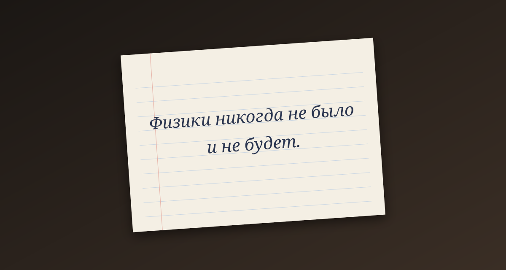

Задача трёх тел · глава 4 из 35
«Границы науки»

Кратко
Наноинженера Ван Мяо, руководителя проекта сверхпрочного материала, приглашают на совещание в Боевой командный центр к генералу Чан Вэйсы. Здесь же грубоватый полицейский Ши Цян, по прозвищу Да Ши, и иностранные военные. Ван узнаёт о череде самоубийств ведущих физиков мира — среди них Ян Дун, блестящий теоретик, которую он знал издалека. Все погибшие были так или иначе связаны с «Границами науки» — международным обществом учёных, обсуждающих пределы познания. Дин И показывает предсмертную записку Ян Дун: «Физики никогда не было и не будет». Генерал говорит, что идёт война, и Ван, без особой охоты, соглашается войти в «Границы науки» как осведомитель.
Главные моменты
- Военные, полиция и учёные за одним столом — никто не понимает, с кем воюет.
- Записка Ян Дун: «Физики никогда не было и не будет».
- Да Ши — хамоватый, но цепкий: с первой встречи раздражает Ван Мяо.
- Генерал Чан: «Это война» — хотя противника никто не видел.
Значение
Начинается основная, детективная линия романа. Читатель вместе с Ван Мяо знает меньше, чем знает о «Красном береге»: связь между двумя линиями проявится не скоро.